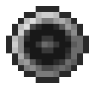

DEVELOPER
BIO

I am a freelance software developer. I specialize in two areas: web development and game development. For websites, I focus on easy to use websites that don't frustrate the user. I avoid over-complicated design and avoid sacrificing usability for the sake of aesthetics. For games, I focus on 2D retro-style graphics and gameplay. I try to balance an authentic retro feel with the realities of modern game development and what a player expects today.
I am also known as mopspear